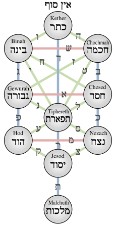

חזון אריאל — תיקונים חדשים
חיבור תורני מקיף מאת הרב עו״ד אריאל טל, העוסק ברזי סודות הגאולה, שמותיו ופועלו של מלכא משיחא, שמות המלאכים וחידושי תורה — ובכללו תרגום ראשון מארמית לעברית וביאור על ספרו הגנוז והנעלם של המקובל האלוקי רבינו משה חיים לוצאטו (הרמח״ל) זצ״ל, "תיקונים חדשים".
חיבור בסודות הגאולה
ספר "חזון אריאל" נכתב מתוך אהבת ישראל ויראת שמים, ומבקש לעורר את הלב באמונה ובחרדת קודש לנוכח אתגרי הדור. רובו ככולו עוסק ברזי סודות הגאולה, בשמותיו ובפועלו של מלך המשיח, בשמות המלאכים, בחידושי תורה ובביאור מחלוקות שבתלמוד.
לב הספר הוא תרגום ראשון מארמית לעברית, בליווי ביאור, לחיבורו הגנוז של הרמח״ל "תיקונים חדשים" — מהדורה הפותחת בפני הקורא העברי את אחד מספרי הסוד החשובים.
החיבור שזור במאות מקורות מן המקרא, התלמוד, הזוהר הקדוש, כתבי האר״י והרמח״ל, מדרשי חז״ל, הראשונים והאחרונים — ולצדם דברי המחבר המאירים את הדברים בלשון בהירה ונגישה ללומד בן זמננו.
ארבעה־עשר חלקים
בחרו חלק לתחילת הקריאה — או צללו ישירות לסוגיה מסוימת
פתח דבר וסודות הגלות
- דבר המחבר
- סוד השואה וחלוקת הגלויות
- ק״ץ הימין
- אדם הראשון ועוג מלך הבשן
סוד אדום, עשיו ופרה אדומה
- סוד שם "אדום"
- מלחמת משיח בס״מ
- למה דווקא פרה אדומה
- זוהר פרשת כי תישא (מתורגם)
שמות הסטרא אחרא ויצר הרע
- סוד שם הס״מ
- עמלק ויצר הרע
- נחש צפע
- סוד שם עשיו
כוח הצדיק ועבודת ה׳
- כוח הצדיק לשינוי הטבע
- מצוות האמונה בביאת המשיח
- סולם עבודת אהבת ה׳ באבות
- עבודת ה׳
צדיקים, גאולה ומאמר הצעקה
- צדיקים על הגאולה
- ההתחלה בסוף והסוף בהתחלה
- מאמר הצעקה בענייני הגאולה
- עניין הצעקה לה׳
שמות המלאכים וברכת כהנים
- דברי מרן ה"חתם סופר" זי"ע
- אנקת״ם פסת״ם — ביאור השמות
- סוד הייחודים בברכת כהנים
- המית היונה
סוד הגלגול ועשרת הרוגי מלכות
- לא אמות כי אחיה
- תיקון חטא יהודה
- דרוש בסוד הגלגול
- עשרת הרוגי מלכות ונשמות השבטים
תרגומי זוהר — העצים שבגן עדן
- יובל מים
- העצים שבגן עדן
- הזוהר הקדוש — מקור, תרגום וביאור
מעשה פנחס וקורח, מאמר שמע
- מעשה פנחס לעומת מעשה בני קורח
- מאמר שמע
- הנועם אלימלך פרשת קורח
יצחק ואברהם, גוג ומגוג
- צדיקות יצחק לעומת אברהם
- דרוש "ואני והנער"
- גוג ומגוג
- נבואת יחזקאל
שמות מלאכים, מזיקים ומקורות
- שמות שרי הקדושה
- סוד צורות המזיקים
- אסופת מקורות: זוהר, בבלי, ירושלמי, מדרשים
ילקוט מפרשים וראשונים
- מורה נבוכים, רבינו בחיי, בעל הטורים
- אברבנאל, ספורנו, אלשיך
- אור החיים, רש״ר הירש, העמק דבר
סוד האותיות (א׳–ת׳)
- עיון באותיות האל״ף־בי״ת
- רמזים וסודות שבכל אות
אוצר מילים וראשי תיבות
- אוצר מילים ומושגים
- מילון מונחי התלמוד
- מילון קיצורים וראשי תיבות
איורים ומקורות
